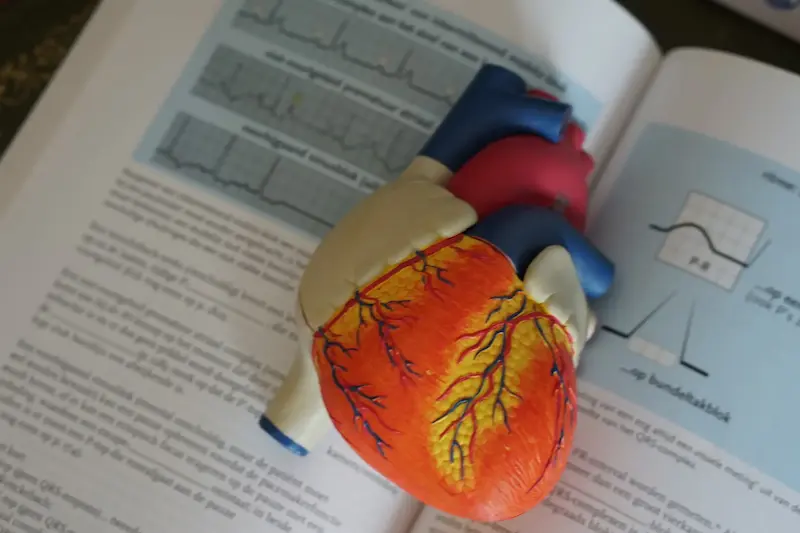
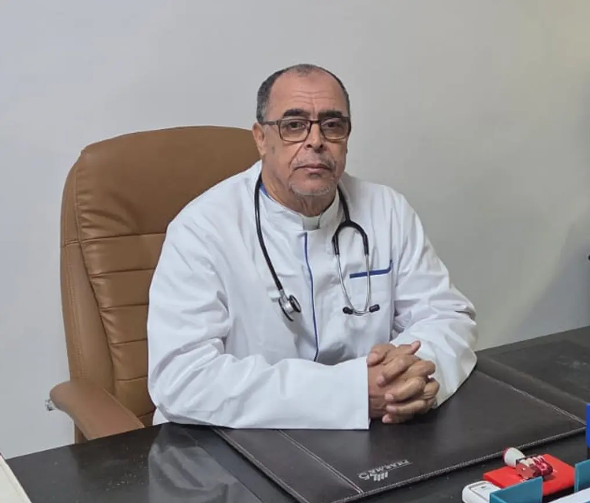
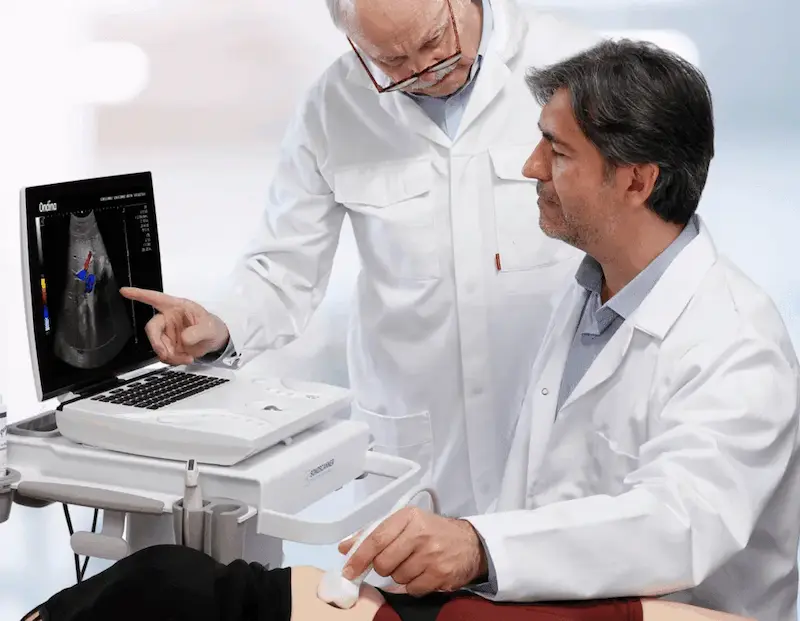

Médecine Générale
Consultations pour adultes et enfants : diagnostic et traitement des maladies courantes.
- Examens de routine
- Prescriptions médicales
- Suivi maladies chroniques
Médecin depuis plus de 38 ans, anciennement installé à Guelmim, aujourd'hui à Inzegane.

Plus de 38 ans
d'expérience médicale
Médecin expert
assermenté près les tribunaux
Cabinet à Inzegane
face à Marjane

Consultations pour adultes et enfants : diagnostic et traitement des maladies courantes.

Examens échographiques réalisés au cabinet, avec compte rendu remis à l'issue de l'examen.
Médecin expert assermenté près les tribunaux, le Dr. HAMYA réalise des expertises médicales à la demande des juridictions et des assurances.
Soins des petites urgences (plaies, brûlures légères) pendant les heures d'ouverture.
Quelques vues du cabinet : accueil, bureau de consultation, salle d'échographie et salle d'attente.
Le cabinet est organisé pour recevoir les patients dans de bonnes conditions :

Médecin généraliste depuis plus de 38 ans, le Dr. Bouchaib HAMYA a exercé de nombreuses années à Guelmim avant d'ouvrir son cabinet à Inzegane, en face de Marjane.
Il est également médecin expert assermenté près les tribunaux.
"Ma priorité est d'offrir à chaque patient une écoute attentive, un diagnostic précis et un traitement adapté à sa situation personnelle."
Trouvez rapidement les réponses à vos questions concernant les consultations, rendez-vous et services du cabinet médical.
Pour prendre rendez-vous avec le Dr. Bouchaib HAMYA, vous avez plusieurs options :
Conseil : Pour une prise de rendez-vous rapide, privilégiez l'appel téléphonique.
Lundi - Vendredi
9h00 - 19h00
Samedi
9h00 - 13h00
Fermé le dimanche.
Oui, le cabinet accueille les nouveaux patients.
Nouveau patient ? Pensez à apporter vos anciens documents médicaux pour le premier rendez-vous.
Pour votre consultation chez le médecin généraliste, nous vous recommandons de préparer votre dossier médical si vous en avez un, ainsi que la liste de vos médicaments actuels. Cela permettra au médecin de mieux comprendre votre historique médical et de vous offrir des soins plus adaptés.
Le cabinet assure notamment :
Si vous avez des besoins spécifiques, n'hésitez pas à nous en parler lors de votre consultation.
Le cabinet dispose d'un échographe pour les examens suivants :
Échographie Abdominale
Foie, vésicule, pancréas, rate, reins
Échographie Thyroïdienne
Glande thyroïde et ganglions
Échographie Musculo-Tendineuse
Épaules, genoux, tendons
Échographie Gynécologique
Utérus et ovaires
Important : Un compte rendu est remis à l'issue de chaque examen.
Oui. Le cabinet reçoit avec ou sans rendez-vous. Sans rendez-vous, l'attente dépend de l'affluence : un appel au 05 28 87 25 13 permet de connaître les disponibilités du moment.
Les tarifs des consultations et des examens vous sont communiqués par téléphone au 05 28 87 25 13. Le cabinet remplit les feuilles de soins AMO (CNSS, CNOPS) pour votre remboursement et fournit les documents demandés par les assurances privées.
Prenez rendez-vous avec le Dr. Bouchaib HAMYA, médecin généraliste à Inzegane
Lotissement Najah, Lot n°16
Immeuble ElIdrissi
Appartement 6 - 2ème étage (ascenseur disponible)
Inzegane (en face de Marjane)
Avec ou sans rendez-vous
Chargement de la carte...
Cabinet médical Dr. HAMYA
Le Dr. Bouchaib HAMYA vous reçoit à Inzegane, avec ou sans rendez-vous, pour des consultations de médecine générale, des échographies, des premiers soins et des expertises médico-légales.